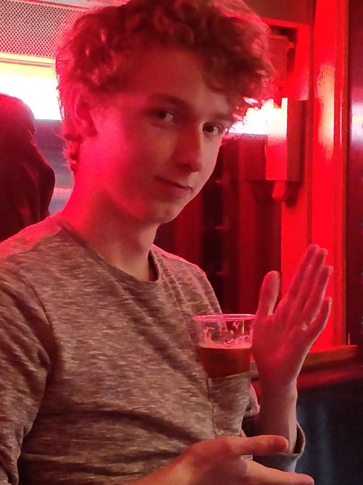

Momenteel volg ik de studie Communicatie & Multimedia Design aan de Haagse Hogeschool, tot nu toe heb ik mijn propedeuse behaald en kijk ik uit op de verdere vakken en stages.
Met dit vak verwacht ik veel te leren over de verschillende technieken die toegepast kunnen worden op producten om deze zo leuk en efficient mogelijk te maken.
Met dit vak wil ik veel van de technische kanten leren, die komen kijken bij een interactieve oplossing.